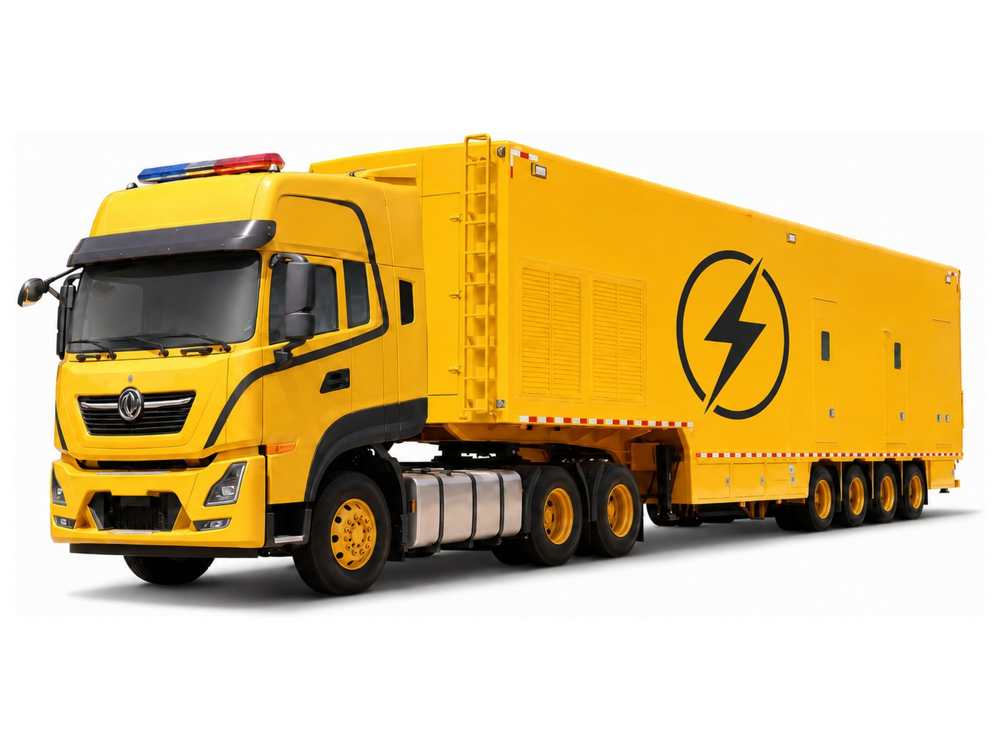
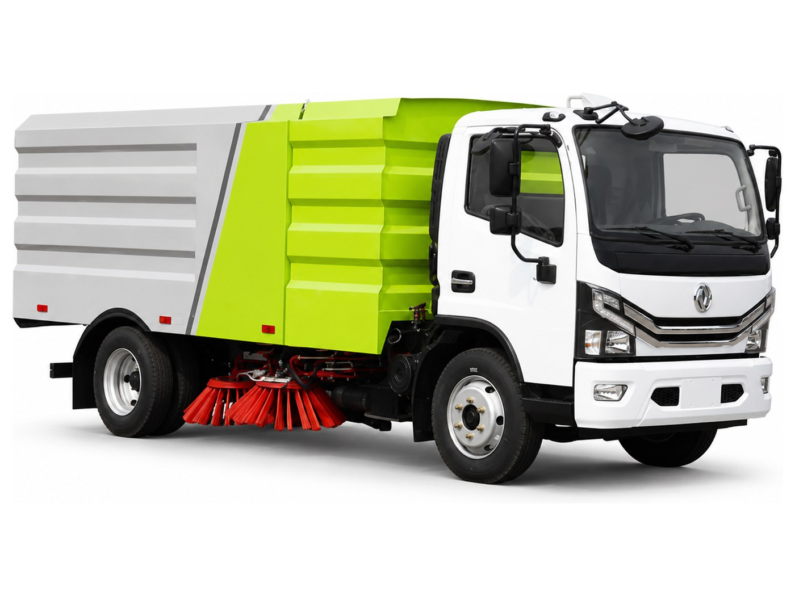
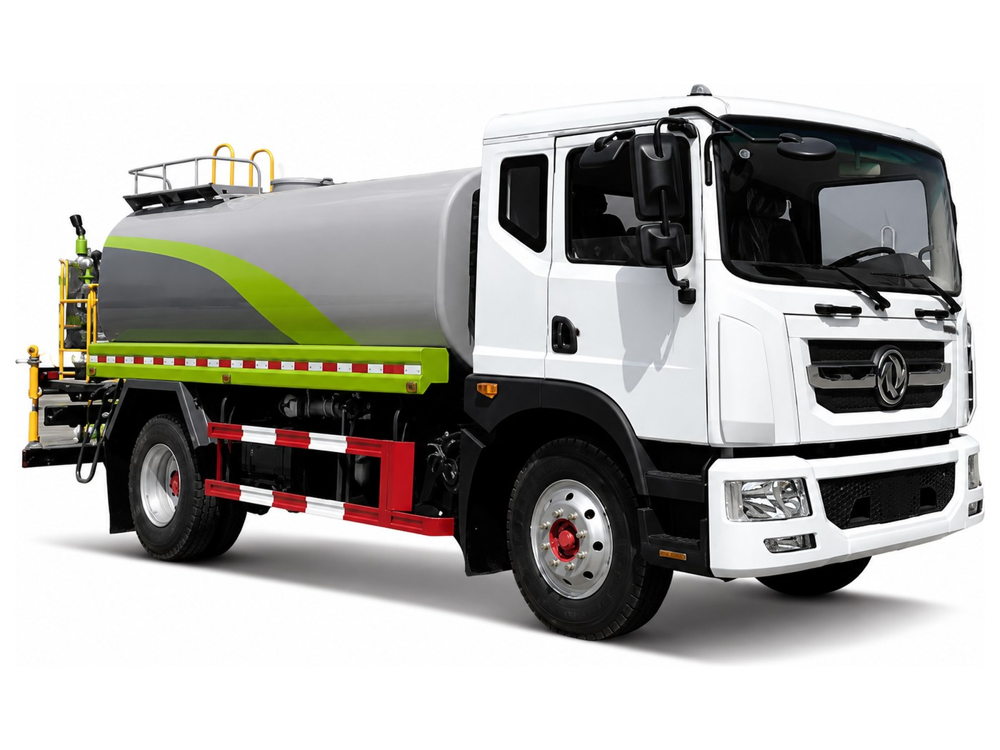
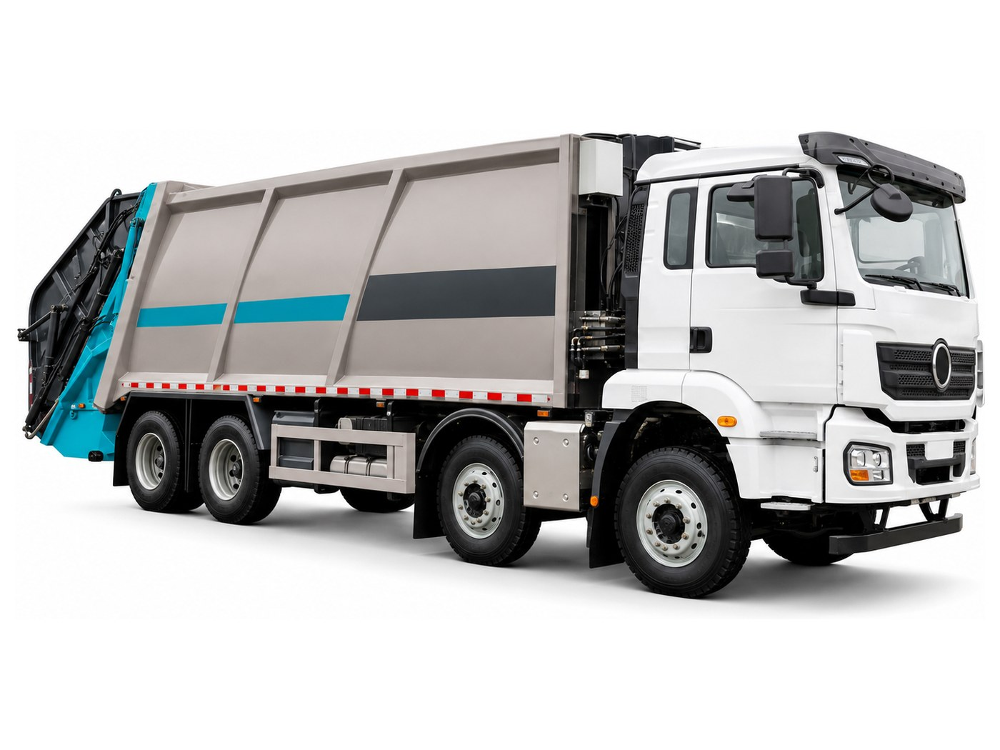

车载发电Vehicle-mounted power
移动电力车Mobile Power Truck
车载成套发电机组，用于应急供电、临时用电与野外作业保障；多种底盘与功率可选，快速部署、随车转场。Vehicle-mounted complete generator sets for emergency supply, temporary power and field operations; multiple chassis and ratings, fast deployment and easy relocation.
具体型号参数请邮件索取。Detailed specifications available on request.

市政清扫Municipal cleaning
扫地车Sweeper Truck
用于道路、厂区与园区的清扫保洁，盘刷配合吸尘系统作业，适合日常保洁与建筑扬尘清理。底盘、箱容与配置按需选型。For road, plant and campus cleaning — side brushes with a vacuum system, suited to routine upkeep and construction dust. Chassis, hopper capacity and configuration are selected to requirement.
具体型号参数请邮件索取。Detailed specifications available on request.

道路洒水与降尘Road watering & dust suppression
洒水车Water Sprinkler Truck
配喷洒装置的水罐车，用于道路洒水、绿化浇灌与工地降尘；前冲后洒可选，也可作临时供水。罐体容积与泵阀配置按需选型。A water tanker with a spray system for road watering, landscape irrigation and site dust suppression; front and rear spray options, and it doubles as temporary water supply. Tank capacity and pump configuration are selected to requirement.
具体型号参数请邮件索取。Detailed specifications available on request.

油品运输Fuel transport
油罐车Tanker Truck
用于柴油、汽油等油品的运输与现场加注，罐体分仓、配套泵阀与计量装置；适合矿区、工地与车队的燃油补给。罐体容积、材质与分仓方案按介质确定。For transporting and dispensing diesel, petrol and similar fuels — compartmented tank with matched pumps, valves and metering; suited to fuel resupply for mine sites, construction sites and fleets. Capacity, tank material and compartment layout follow the medium carried.
具体型号参数请邮件索取。Detailed specifications available on request.

环卫作业Waste collection
垃圾车Refuse Truck
后装压缩式垃圾车，用于城区与园区的生活垃圾收运；液压压缩提高单车装载量，减少往返次数。底盘与箱容按线路需求选型。Rear-loader compactor for municipal and campus waste collection; hydraulic compaction raises payload per trip and cuts return runs. Chassis and body volume are matched to the collection route.
具体型号参数请邮件索取。Detailed specifications available on request.
需要特种车辆方案？Need a special-vehicle solution?
告诉我们用途、底盘与功率/容量需求，我们按需选型报价。Tell us the application, chassis and rating/capacity you need — we quote by specification.
邮件咨询Enquire